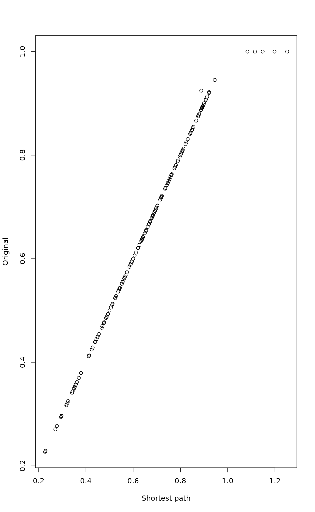

Stepacross as Flexible Shortest Paths or Extended Dissimilarities
stepacross.RdFunction stepacross tries to replace dissimilarities with
shortest paths stepping across intermediate
sites while regarding dissimilarities above a threshold as missing
data (NA). With path = "shortest" this is the flexible shortest
path (Williamson 1978, Bradfield & Kenkel 1987),
and with path = "extended" an
approximation known as extended dissimilarities (De'ath 1999).
The use of stepacross should improve the ordination with high
beta diversity, when there are many sites with no species in common.
Arguments
- dis
Dissimilarity data inheriting from class
distor a an object, such as a matrix, that can be converted to a dissimilarity matrix. Functionsvegdistanddistare some functions producing suitable dissimilarity data.- path
The method of stepping across (partial match) Alternative
"shortest"finds the shortest paths, and"extended"their approximation known as extended dissimilarities.- toolong
Shortest dissimilarity regarded as
NA. The function uses a fuzz factor, so that dissimilarities close to the limit will be madeNA, too.- trace
Trace the calculations.
- ...
Other parameters (ignored).
Details
Williamson (1978) suggested using flexible shortest paths to estimate
dissimilarities between sites which have nothing in common, or no shared
species. With path = "shortest" function stepacross
replaces dissimilarities that are
toolong or longer with NA, and tries to find shortest
paths between all sites using remaining dissimilarities. Several
dissimilarity indices are semi-metric which means that they do not
obey the triangle inequality \(d_{ij} \leq d_{ik} + d_{kj}\), and shortest path algorithm can replace these
dissimilarities as well, even when they are shorter than
toolong.
De'ath (1999) suggested a simplified method known as extended
dissimilarities, which are calculated with path = "extended".
In this method, dissimilarities that are
toolong or longer are first made NA, and then the function
tries to replace these NA dissimilarities with a path through
single stepping stone points. If not all NA could be
replaced with one pass, the function will make new passes with updated
dissimilarities as long as
all NA are replaced with extended dissimilarities. This mean
that in the second and further passes, the remaining NA
dissimilarities are allowed to have more than one stepping stone site,
but previously replaced dissimilarities are not updated. Further, the
function does not consider dissimilarities shorter than toolong,
although some of these could be replaced with a shorter path in
semi-metric indices, and used as a part of other paths. In optimal
cases, the extended dissimilarities are equal to shortest paths, but
they may be longer.
As an alternative to defining too long dissimilarities with parameter
toolong, the input dissimilarities can contain NAs. If
toolong is zero or negative, the function does not make any
dissimilarities into NA. If there are no NAs in the
input and toolong = 0, path = "shortest"
will find shorter paths for semi-metric indices, and path = "extended"
will do nothing. Function no.shared can be
used to set dissimilarities to NA.
If the data are disconnected or there is no path between all points,
the result will
contain NAs and a warning is issued. Several methods cannot
handle NA dissimilarities, and this warning should be taken
seriously. Function distconnected can be used to find
connected groups and remove rare outlier observations or groups of
observations.
Alternative path = "shortest" uses Dijkstra's method for
finding flexible shortest paths, implemented as priority-first search
for dense graphs (Sedgewick 1990). Alternative path = "extended"
follows De'ath (1999), but implementation is simpler
than in his code.
Value
Function returns an object of class dist with extended
dissimilarities (see functions vegdist and
dist).
The value of path is appended to the method attribute.
References
Bradfield, G.E. & Kenkel, N.C. (1987). Nonlinear ordination using flexible shortest path adjustment of ecological distances. Ecology 68, 750--753.
De'ath, G. (1999). Extended dissimilarity: a method of robust estimation of ecological distances from high beta diversity data. Plant Ecol. 144, 191--199.
Sedgewick, R. (1990). Algorithms in C. Addison Wesley.
Williamson, M.H. (1978). The ordination of incidence data. J. Ecol. 66, 911-920.
Note
The function changes the original dissimilarities, and not all like this. It may be best to use the function only when you really must: extremely high beta diversity where a large proportion of dissimilarities are at their upper limit (no species in common).
Semi-metric indices vary in their degree of violating the triangle
inequality. Morisita and Horn--Morisita indices of
vegdist may be very strongly semi-metric, and shortest
paths can change these indices very much. Mountford index violates
basic rules of dissimilarities: non-identical sites have zero
dissimilarity if species composition of the poorer site is a subset of
the richer. With Mountford index, you can find three sites \(i, j,
k\) so that \(d_{ik} = 0\) and \(d_{jk} = 0\), but \(d_{ij} > 0\). The results of stepacross
on Mountford index can be very weird. If stepacross is needed,
it is best to try to use it with more metric indices only.
See also
Function distconnected can find connected groups in
disconnected data, and function no.shared can be used to
set dissimilarities as NA. See swan for an
alternative approach. Function stepacross is an essential
component in isomap and cophenetic.spantree.
Examples
# There are no data sets with high beta diversity in vegan, but this
# should give an idea.
data(dune)
dis <- vegdist(dune)
edis <- stepacross(dis)
#> Too long or NA distances: 5 out of 190 (2.6%)
#> Stepping across 190 dissimilarities...
plot(edis, dis, xlab = "Shortest path", ylab = "Original")

## Manhattan distance have no fixed upper limit.
dis <- vegdist(dune, "manhattan")
is.na(dis) <- no.shared(dune)
dis <- stepacross(dis, toolong=0)
#> Too long or NA distances: 5 out of 190 (2.6%)
#> Stepping across 190 dissimilarities...